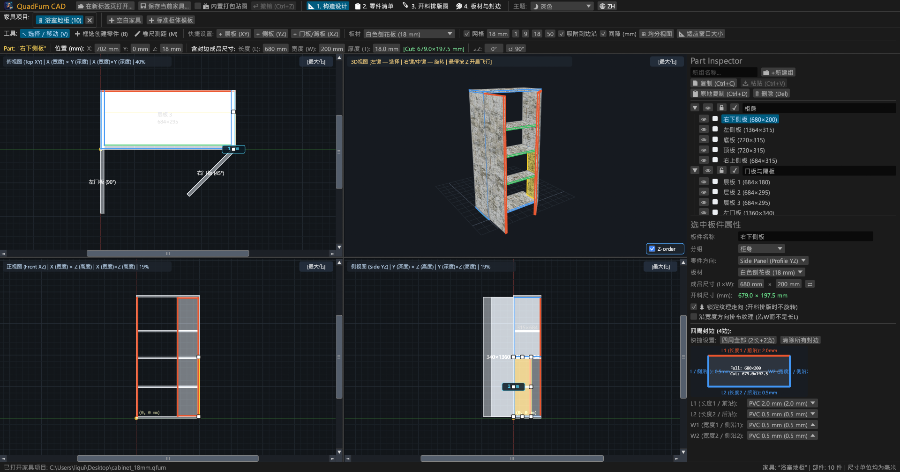
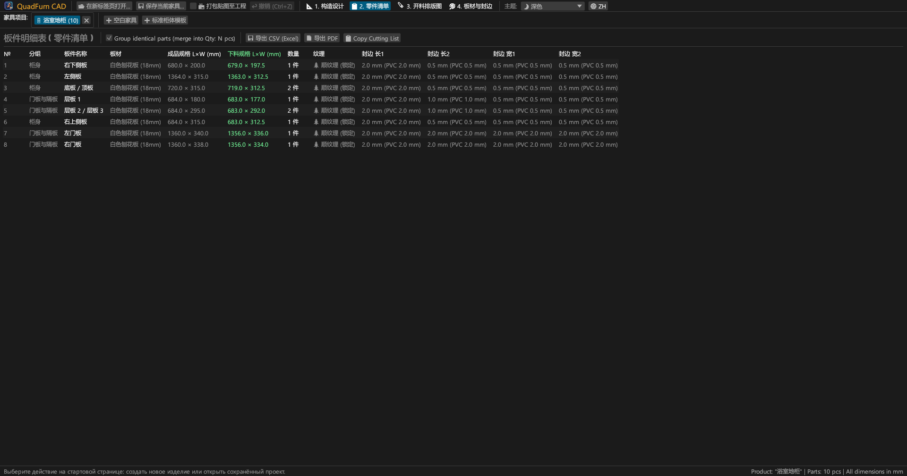
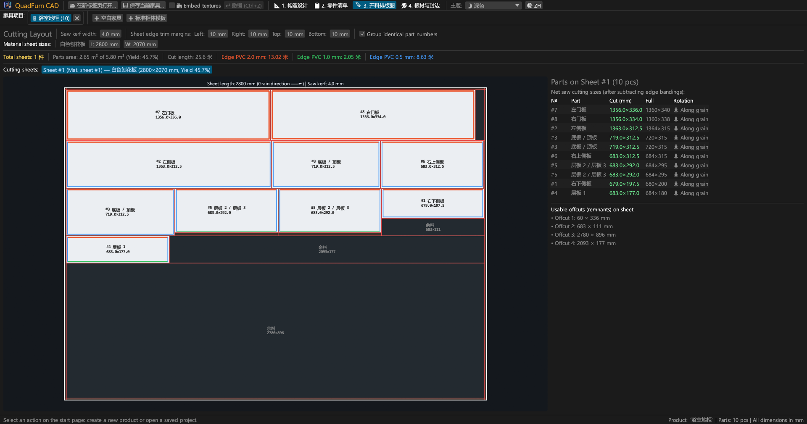
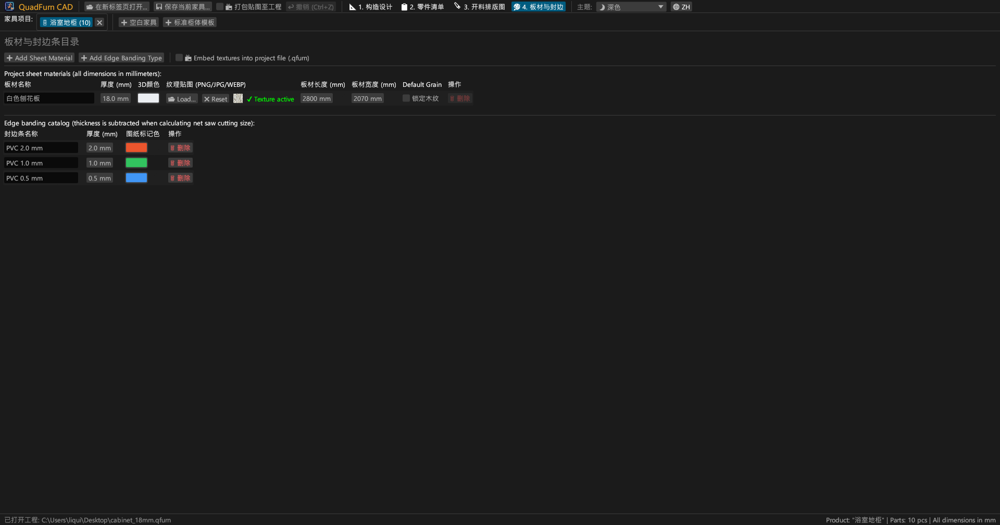
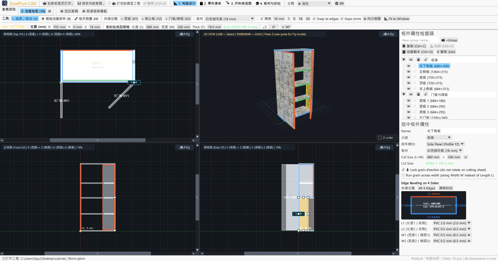
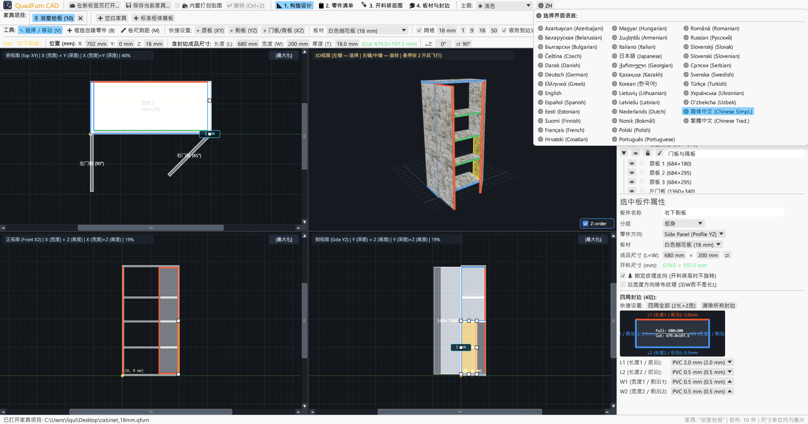

专为定制家具厂与木工师傅打造的高性能桌面 CAD。4 视口联动空间建模、算术公式直接求值输入、四周封边厚度自动扣除与板材优化下料。

将 4 视口联动制图、精准数值几何变换与板材剪板优化开料算法融为一体。
俯视（XY 平面）、主视（XZ 立面）、侧视（YZ 剖面）与 3D 透视视口多重视图联动，具备磁性边缘吸附与毫米级实时测距。
直接输入零部件三维坐标（X, Y, Z）、外形尺寸（长宽高）与旋转角（∠Z），所有输入框均内置算术表达式自动求值（如直接输入 600-4）。
在板件 4 边任意指定 PVC/ABS 封边条（0.4–2.0 mm），系统自动扣除对应边厚度，即时计算出裁板推台锯所需的精准净开料尺寸。
严格遵循木材木纹方向、锯片锯路缝宽（如 4.0 mm）、板材四周边角修边量，并完整统计与追踪可利用余料。
支持多标签页并行设计不同柜体或家具，跨工程自由复制粘贴零部件（Ctrl+C / Ctrl+V），缺失材质与封边自动无缝补齐。
一键导出 A4 横向生产下料手册：板件明细表、4 视口工程图、各板材开料排版图、板料与封边条消耗统计（含 +15% 耗损余量）。





纯原生绿色免安装桌面可执行文件，无任何外部运行时依赖。
便携免安装 ZIP 压缩包，解压即用。
sudo apt install ./quadfurn_0.2.2_amd64.deb
原生 Universal 应用包，同时支持 Apple Silicon (M1–M4) 与 Intel x86_64。
| 按键 / 组合键 | 功能说明 | 适用范围 |
|---|---|---|
| V | 选择 / 移动工具（拖拽平移、8 个拉伸控制柄、鼠标框选多选） | 2D 正交视口 |
| B | 矩形画框创建板件（在当前视图平面内快速拉伸生成板件） | 2D 正交视口 |
| M | 卷尺测距工具（精确测量两点间水平、垂直与直线距离） | 2D 正交视口 |
| Z | 第一人称自由飞行模式（按 Z 键锁定鼠标并用 WASD 巡游） | 3D 视图 |
| ← → ↑ ↓ | 按网格步长平移选中板件（按住 Shift 为双倍步长） | 2D 正交视口 |
| Ctrl + C / V | 复制 / 粘贴选中的板件（支持跨产品标签页） | 所有标签页 |
| Ctrl + D | 原地偏移快速复制选中的板件 | 活动工程 |
| Ctrl + S | 将当前家具保存为 .qfurn / .json 工程文件 | 活动工程 |
| Ctrl + Z | 撤销上一步操作（支持多达 40 步历史记录） | 活动工程 |
| Delete / Backspace | 删除当前选中的板件 | 活动工程 |